Every 6 months the OpenBSD project has the pleasure to release software on an official CDROM set, with artwork and a matching song. Theo and some other developers mutate a theme (from a classical setting, a movie, or some genre) into the fishy world of Puffy, to describe some advance, event or controversy the project went through over the previous six months. To match the art released with the CD, we join up with some musicians we know to make a song. Theo then gets the pleasure (and responsibility) to write a commentary explaining it all.
Click to order "The Songs 3.0 - 4.0" and "The Songs 4.1 - 5.1".
Both CDs contain extra tracks by the artist Ty Semaka
(who really has "had Puffy on his mind").
"The Songs 4.1 - 5.1" also contains another track by audio-subsystem
developer Alexandre Ratchov, mixed and produced using OpenBSD code.
|
OpenBSD 5.8 CD2 track 4 is an uncompressed copy of this song. 3:06 (MP3 5.7MB) (OGG 3.4MB) 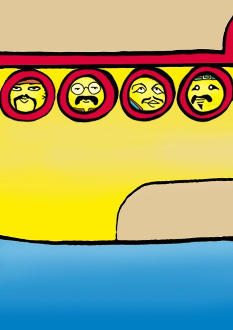 |
After 20 years, one has to admit: With every release, Puffy becomes better, a little better all the time. With every release, Puffy becomes better, so much better all the time. Let's count in sys: 2064534 lines of C code 51526 lines of Assembly code With every release, Puffy becomes better, really better all the time. Let's count in log: 314544 commits from developers 43.67 commits per day on average 351 hackers and slackers through the years Proactive security and sane defaults Puffy becomes better than ever before Free, functional, and secure by default With every release, Puffy becomes better, so much better all the time. With every release, Puffy becomes better, so much better all the time. With every release, Puffy becomes better. With every release, Puffy becomes better, so much better all the time. |
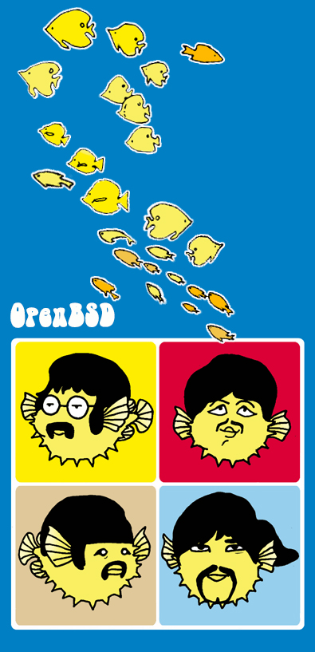 |
Lyrics, composition, arrangement, and recording by Joerg Jung.
Female vocals by Ulrike Jung.
Edited, composed, and arranged on OpenBSD using Audacity, CMU Flite, and Schism Tracker.
Mastering by Lars Neugebauer of adlerhorstaudio and Joerg Jung.
|
OpenBSD 5.7 CD2 track 2 is an uncompressed copy of this song. 3:00 (MP3 5.9MB) (OGG 3.9MB) 
|
Comin' to ya, via CVS All the code, that's safe to load Got the ProPolice, in the GCC Boundry checks, and Canaries I'm a Source Fish, ha ha Yeah I'm a Source Fish I'm a Source Fish Woah I'm a Source Fish Code used to suck, in a Big way But it Keeps getting better, each and every day OpenSSL, wasn't done by us With Libre ha ha, there ain't no fuss I'm a Source Fish Woah I'm a Source Fish I'm a Source Fish I'm a Source Fish With a secure shell, and a key or two You'd be amazed, at what I can do OpenSSH, relayd, PF, OpenNTPd All I am, has been used for free I'm a Source Fish, that's right I'm a Source Fish I'm a Source Fish Yeah I'm a Source Fish When the bullies, in that neighborhood Come collecting, just remember that I'm Free, I'm Free Yeah Yeah, I'm Free Yeah Yeah Instrumental I'm a Source Fish, ha Yes I'm a Source Fish You, over there You a Source Fish, ha ha Yeah, I'm a Source Fish Who that over there, He's a Source Fish, You a Source Fish, ha I'm a Source Fish, Yeah Yeah I'm a Source Fish, Yeah Yeah Source Fish |
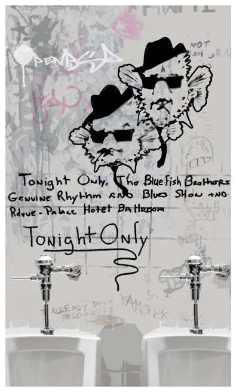 |
Richie Pollack: vocals and harmonica. Jonathan Lewis: programming,
bass, piano, and Hammond B3 organ. André Wickenheiser: trumpet.
Lyrics by Bob Kitella. Produced and Recorded by Jonathan Lewis.
|
OpenBSD 5.6 CD2 track 2 is an uncompressed copy of this song. 3:54 (MP3 7.3MB) (OGG 5.3MB) 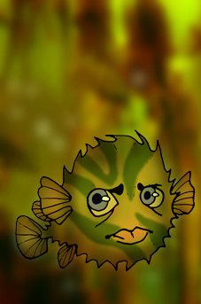 |
No lyrics. |
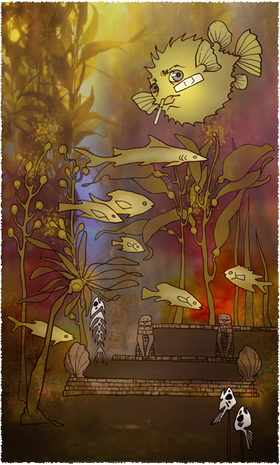 |
No one wants to fork an open source project: it's a huge
amount of work and isn't efficient in community time, but when you
wake up one day and find that a hole in the SSL library you're using
made world-wide news, and that the library's bad code style is
hiding exploit mitigation countermeasures, then suddenly forking
seems critically important. Two months of intense development later,
LibreSSL was released.
The bigger questions remain for the open source development community
to answer: why did this occur? Why is the OpenSSL code base so hard
to understand? Complexity is the enemy of security, so for something
whose raison d'être is security, why are secondary goals allowed
to endanger the absolute #1 goal? Or has OpenSSL become a brand which
allows companies to — on the cheap — meet security
"requirements" like FIPS instead of actually being secure?
How important is it for developers and customers to have software
where security is the goal? How much are they willing to push back
on the OS developers and others to achieve that? Can we set a new,
higher bar for best practices that will drive everyone to do more
than just posture?
Composed by Richard Wagner in July of 1851. Arranged and performed
by Jonathan Lewis.
|
OpenBSD 5.5 CD2 track 2 is an uncompressed copy of this song. 4:18 (MP3 7.9MB) (OGG 5.9MB) 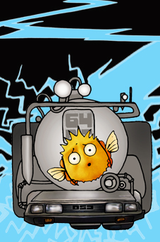 |
Tell me doctor, what will be the date, Is it 1901, or 2038. All I wanna do is make my keyboard sing From today I'll be fine But you better promise me I won't wrap back in time. Don't wanna wrap back in time. Don't bet your future on compat's bad advice Better remember, bugs always strike twice. Please don't use time32_t, not just a word again So talk to me, I'll be fine But you better promise me I won't wrap back in time. Don't wanna wrap back in time Don't wanna wrap back in time No bad hacks in time. Don't wanna wrap back in time Don't wanna wrap back in time don't wrap! don't wrap! |
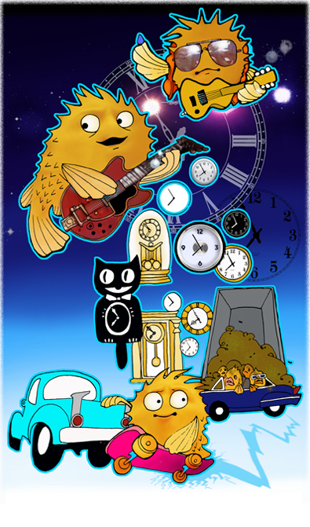 |
In August of 2012, Philip Guenther started the OpenBSD work to solve this. After a year of work it was ready enough for merging, and in August 2013 the time_t type was changed to int64_t on all platforms and the kernel and userland were adapted to the new situation. The initial work was committed right after OpenBSD 5.4, then polished in tree over the next 6 months.
The next part of the process was to drag the "ports" software ecosystem along because no one else had paved the way for 32-bit machines to run with 64-bit time_t. This required a fair bit of upstream involvement. Thousands of fixes were required to make both 32-bit and 64-bit time work transparently. There will be more fixing in the future, but the concept is proven.
In the past OpenBSD pushed risky theoretical ideas into mainstream software practice by proving the ecosystem was ready to change. No OS wants to make a ABI jump until the case for change is proven. Stack protection, ASLR, and W^X principles are now in common use by mainline operating systems... because things like Firefox and Postgresql don't break anymore. OpenBSD built that route.
In the same way, the road is paved for the 64-bit time_t transition. Other operating systems can now make this jump.
Lyrics by Bob Beck and Philip Guenther. Vocals by Steve Pineo.
Composition, arrangement, recording, and mastering by Jonathan Lewis.
|
OpenBSD 5.4 CD2 track 2 is an uncompressed copy of this song. 2:27 (MP3 4.5MB) (OGG 3.0MB) 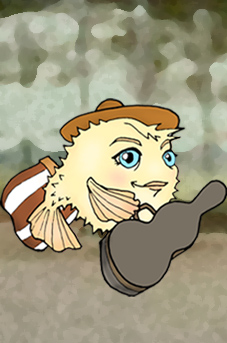 do { to loop at least one time regexp, to match a chunk of text main, the name, by which I'm called for, another kind of loop sem, a way to block a thread log a func to follow sem t, a place to store the time } while (we close the block of do) |
|
PF divert-to and async resolver Function call tracing to show how you got there BGE changes to speed up the stack These are a few of our favorite hacks Closing the kernel thread races that hang you Updating ports from the versions that pain you Kernel mode setting and elf comes to vax These are a few of our favorite hacks Buffer queue limits and locale additions Man-page updates to relate the traditions Make DHCPD better with acks These are a few of our favorite hacks (chorus) When my programs crash, when the kernel hangs When I'm feeling mad I update to get more of our favorite hacks And then I don't feel so bad (repeat) (chorus) When the build stops, when the panic hits, When I'm feeling mad I update to get more of our favorite hacks And then I don't feel so bad |
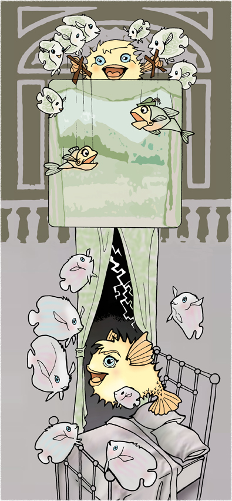 |
Lyrics by Philip Guenther. Vocals by Allison Lynch. Composition,
arrangement, recording, and mastering by Jonathan Lewis.
|
OpenBSD 5.3 CD2 track 2 is an uncompressed copy of this song. 3:07 (MP3 5.7MB) (OGG 4.4MB) 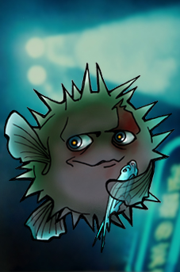 Starting with this release, we introduce a new artist -- Katherine Piro. |
|
I've seen things your programs wouldn't believe. [laughs] Stack frames unwinding with Turing complete behaviour. I watched threads racing trampoline bindings in ld.so. All those overwrites will be lost in memory like [coughs] accesses to NULL. Time to dump core. |
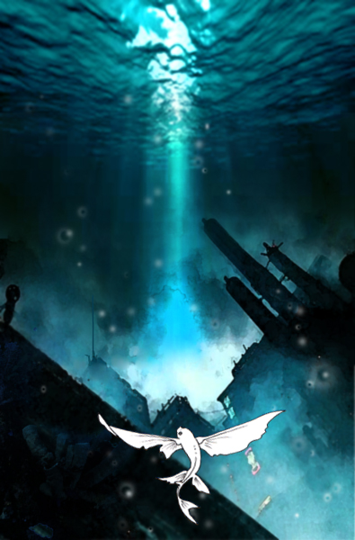 |
Lyrics by Theo de Raadt. Composition, arrangement, vocals,
recording, and mastering by Bob Kitella.
|
OpenBSD 5.2 CD2 track 2 is an uncompressed copy of this song. 3:01 (MP3 5.6MB) (OGG 4.1MB) 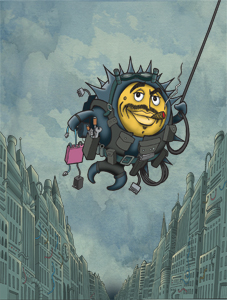 Just as the original song professed its love for Brazil, "World, you'll love my Linux" is the passionate call of an idealistic dreamer who can't bear the thought of software that will only run under Windows, and yet loves the situation with software that will only run under particular Linux distributions. This problem has proliferated itself into the standards bodies, with Posix adopting Linuxisms ahead of any other variant of Unix. Posix and Unix have made it where you can write reasonably portable software and have it compile and run across a multitude of platforms. Now this seems to be changing as the love for Linux drives the standards bodies into accepting everything Linux, good and bad.
We also are faced with groups writing software that only works
with particular distributions of Linux. From this we get software that
not only isn't very portable, but often not particularly stable. Our
idealistic dreamer in the song loves running one, or more than one distribution
of Linux for a particular purpose. Unfortunately, the rest of us are left
with the unattractive choice of doing the same, or relying on
herculean efforts to port software that is being actively developed in a
way to discourage porting it to other platforms.
|
|
Linux, the one and only true Unix We are in every way Posix We voice our yearning "Someday soon" We won't need any other. Then, tomorrow brings a new distro It's better than the last you know Another million bits that changed All the hacks and tweaks we conjure up They just get pushed into Posix There's one thing that I know The world will love it, all Linux Then, there's other stuff we push as well Others can work around this hell With just a million lines of Shell Now, as standards ape the one Linux Everyone else just gets stuffed There's one thing that I'm certain of The world will love it, all Linux We are Posix World, you'll love my Linux Linux, Linux |
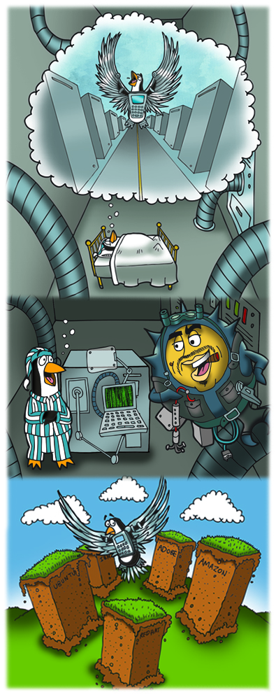 |
Lyrics by Bob Beck. Music composed and arranged by Jonathan Lewis. Vocals
by Doug McKeag. Guitar by Victor Farrell. All other instruments,
Jonathan Lewis. Recorded, mixed, and mastered Jonathan Lewis of Moxam
Studios.
|
OpenBSD 5.1 CD2 track 2 is an uncompressed copy of this song. 2:47 (MP3 5.1MB) (OGG 4.0MB) 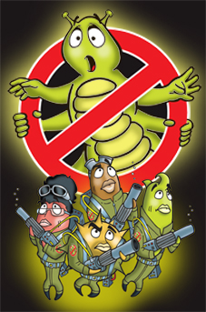 |
|
If you've got a bug That you just can't shove Who ya gonna install? Bugbusters! Buffer overflow? Don't know where to go Who ya gonna install? Bugbusters! I ain't afraid of no holes I ain't afraid of no holes And you're off by one And it ain't no fun Who ya gonna install? Bugbusters! If your system's down And it makes you frown Who ya gonna install? Bugbusters! I ain't afraid of no holes I ain't afraid of no holes If you need a trace Gonna win that race Who ya gonna install? Bugbusters! If you got a crash And you got no cash Who ya gonna install? Bugbusters! OpenBSD makes me feel good! |
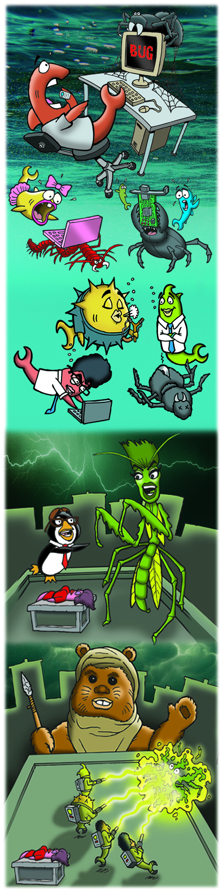 |
Written and Arranged by Ty Semaka and Jonathan Lewis. Lyrics and Vocals
by Ty Semaka (www.tysemaka.com). All instruments programmed by
Jonathan Lewis. Recorded, mixed, and mastered by Jonathan Lewis of
Moxam Studios (moxam@hotmail.com).
|
This is an extra on
"The Songs 4.1 - 5.1" Audio CD.
3:11 (MP3 5.8MB) (OGG 4.7MB) This is an extra track by Ty Semaka and Jonathan Lewis. On a regular basis, the OpenBSD developers hold events called hackathons. We've held many many of them, all over the world. Sub-groups of developers sit in one room and work fulltime for around a week. One phrase in particular that has come up amongst developers, to cut extra chit-chat to a minimum, is Shut up and Hack. We've placed this phrase on hackathon tshirts too; they were very popular with the guys. Order this CDROM from the OpenBSD Store. The 2nd OpenBSD Audio CD "The Songs 4.1 - 5.1" celebrates the artwork and songs that have been released with each OpenBSD release. All the songs from the 4.1 to 5.1 releases are included (plus two bonus tracks). The audio CD package contains some stickers (which ones may vary). |
|
Shut up and hack! In the hack room In the back room Wires everywhere At the tables Fingers able Take another dare! Close up your holes Pick up the slack! Get your head down! Shut up and hack! Close up your holes Pick up the slack! Get your head down! Shut up and hack! Coding faster You're the master of security In your t-shirts Hack till it hurts This is how to be free CHORUS Hit the pub now We're a club now Trading genius for free Have a laugh and Be a rock band This is how it should be! CHORUS |
|
This is an extra track by audio-subsystem developer Alexandre Ratchov. It has no lyrics. The music is inspired by a poem with the same title and was entirely recorded and mixed using OpenBSD.
Order this CDROM from the OpenBSD Store.
|
OpenBSD 5.0 CD2 track 2 is an uncompressed copy of this song. 3:03 (MP3 5.6MB) (OGG 4.0MB) 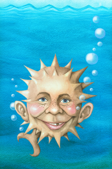 Ty Semaka has been drawing Puffy-inspired parody artwork for us for many releases. This time I asked him to do some art that is a meta-parody: A Puffy-inspired parody of a parody magazine! |
|
What? Me Worry? Not with this stuff Nobody gettin' in Nobody get tough I'm a comic book kid Having fun in the woods Carving out toys and makin' em good Ya it's spy versus spy I got so many tricks I got undercover agents Even out in the sticks Threw a brick through your window Ya it's teenage fun Then I blew up a bridge And blocked out the sun Little black flies on a pile of GNU With a Dairy Queen tip And Imma comin' for you Make fun of everybody That's my thang Ya It's a geeks wet dream I give a poit! blit! spang! It's a mad mad world and number 5 is alive I gotta black submarine and I'm built to survive Threw a brick through your window Ya it's teenage fun Then I blew up a bridge And blocked out the sun Keep the source open Gonna get my kicks I'm 16 now Ya I don't need mix Got a stack o magazines In my treehouse club Nobody gettin' up here Its secure ya bub Got a dime store bazooka And a bubble gum tank Got pots and pans for cookin' up some Open source stank Threw a brick through your window Ya it's teenage fun Then I blew up a bridge And blocked out the sun |
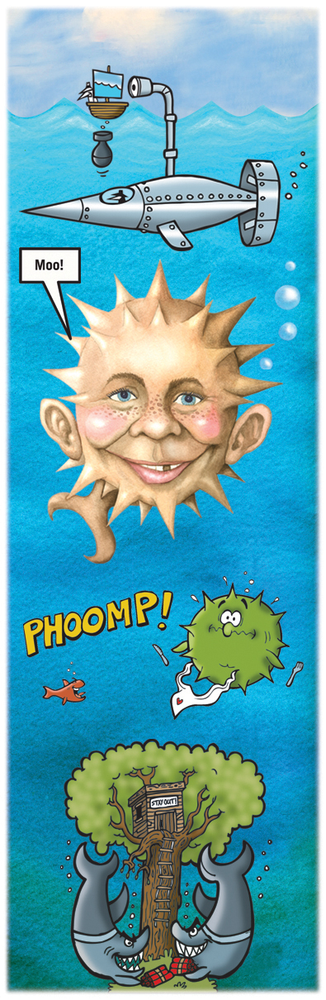 |
Written and Arranged by Ty Semaka and Jonathan Lewis. Lyrics and Vocals by
Ty Semaka (www.tysemaka.com). Percussion and fuzzy bass guitar by Jonathan
Lewis. Electric guitars by Tim Williams (www.cayusemusic.com). Recorded,
mixed, and mastered by Jonathan Lewis of Moxam Studios (moxam@hotmail.com).
|
OpenBSD 4.9 CD2 track 2 is an uncompressed copy of this song. 3:43 (MP3 6.8MB) (OGG 5.7MB) 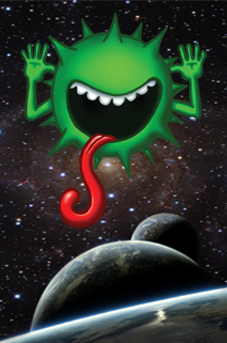 This release is OpenBSD 4.9. Then why is the song about 4.2? Huh? The OpenBSD 4.4 release artwork honoured the (Berkeley) CSRG guys for their efforts with the BSD 4.4 release -- they fought and managed to free the code. This release the artwork is based on the stories of Douglas Adams, including his favorite number -- 42. Therefore we can remember the previous major achievement of CSRG - BSD 4.2. BSD 4.2 was not free, but it created and integrated so many new technologies that we all depend on today. Take a moment to consider how many things first available in BSD 4.2 you are using at this moment, to read this page -- sockets, AF_INET, virtual memory, etc. Today, new releases of operating systems from well-known vendors contain less new features than BSD 4.2 did. If only we could stop slacking and make a release like that! |
|
How many streams must a fish swim down before you can call him a man? And how many codes must a vendor lock down before silicon turns to sand? Yes and how many times must the lawyers fly before they are forever banned? The answer my friend BSD 4.2 The answer BSD 4.2 How many years can a planet exist before it is paved by the V? How many years can some source code exist before it's allowed to be free? Yes and how many times can a fish turn his head and pretend that he just doesn't see? The answer my friend BSD 4.2 The answer BSD 4.2 How many times must we fight for the right to share what is already ours? Yes and how many times must we hitch while we hike To end up not getting far? And how many fish must we shove in our ear before we can hear every star? The answer my friend BSD 4.2 The answer BSD 4.2 And now we can travel the galaxy with ships that are silicon made And now with a towel and a laptop in hand our future is made in the shade And what did we use to build on and on Inside everything that we use? The answer my friend BSD 4.2 The answer BSD 4.2 |
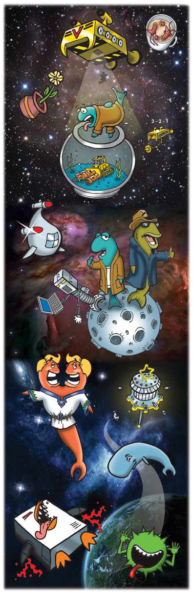 |
Written and Arranged by Jonathan Lewis. Lyrics and Vocals by Ty Semaka
(www.tysemaka.com). Guitar and harmonica by Leslie Alexander
(www.lesliealexander.com). Recorded, mixed, and mastered by Jonathan
Lewis of Moxam Studios (moxam@hotmail.com).
|
OpenBSD 4.8 CD2 track 2 is an uncompressed copy of this song. [Instrumental] 2:39 (MP3 4.4MB) (OGG 3.0MB) 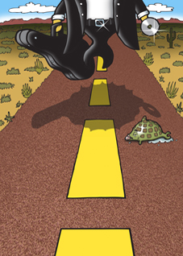 [Sorry, no commentary] |
|
|
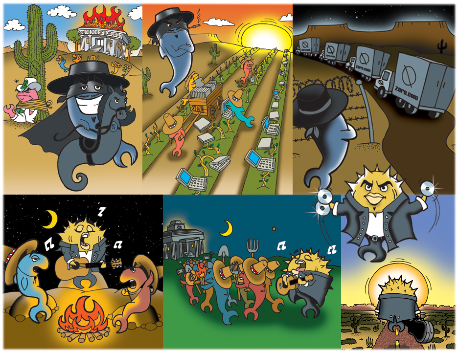 |
Written and performed by Manuel Jara and Mauricio Moreno of 'Los Morenos'.
|
OpenBSD 4.7 CD2 track 2 is an uncompressed copy of this song. 4:39 (MP3 8.5MB) (OGG 6.3MB) 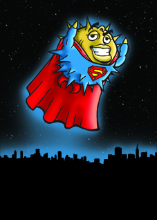 [Sorry, no commentary] |
|
Back when I was twenty They said I wouldn't last All that I believed in Were the teachings of the past All I ever wanted Was to keep the world secure And all the criticizing Was something I'd endure The changes that I've been through And the trials along the way The battle isn't over And I'm living day by day But I'm still here Some say that I'm a hero But I'm just being me With my filter I can hide My true identity One day when I was flying Across the open skies I saw the bridge to freedom Had been weakened over time The server room was burning up And melting the array A little breath of cold air Was enough to save the day CHORUS: But I'm still here Better than I've ever been before I'm still free Close a window, open up a door I'm still me INSTRUMENTAL Now that I am older And I've been around so long The world is ever changing I'm still righting all the wrong CHORUS: |
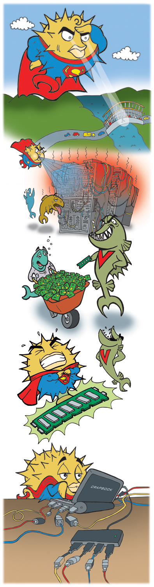 |
Written, arranged, and sung by Bob Kitella. Guitar by Tim Campbell.
Keyboard by Bob Kitella and Jonathan D. Lewis. Bass, additional programming,
mixing, and mastering by Jonathan D. Lewis.
|
OpenBSD 4.6 CD2 track 2 is an uncompressed copy of this song. 2:38 (MP3 4.8MB) (OGG 3.6MB) 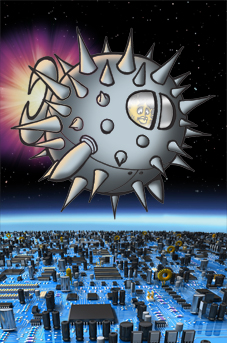 [Sorry, no commentary] |
|
Welcome to the future One very rich man runs the Earth with one multinational owns your stuff and owns your birth Everyone is armless Personal robots Do it all for you Sitting on your slug head One channel TV never gonna bore you CHORUS Does it sound like a paradise or a way to die while alive and a loser I'm a man from the open past And I'll never last on the Planet of the Users Everyone is happy No more government No more media Only the Company Entertains you while it feeds you Soylent Green pap Eating your friends while shopping, buying Stupid applications Obsolete before you try them CHORUS Take me back Take me back Please Take me back Way back in my time Open source kept everyone choosing People knew the insides Of devices they were using Hackers had a doorway Now it's locked and dumbed down so much One button coma Stop the future truly outta touch CHORUS |
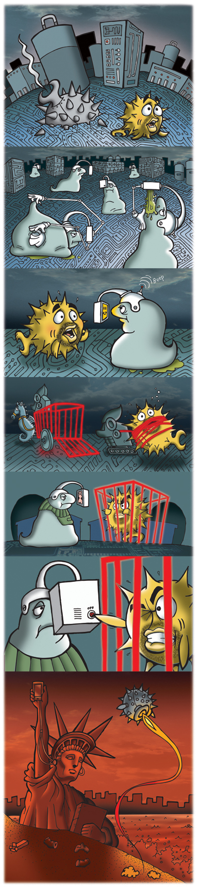 |
Written and arranged by Ty Semaka and Jonathan Lewis. Lyrics by Ty Semaka.
Vocals by Duncan McDonald, bass guitar by Jonathan Lewis, guitars by
Russ Broom, drums by John McNeil.
Recorded, mixed, and mastered by Jonathan Lewis of
Moxam Studios (moxamstudios@hotmail.com).
|
OpenBSD 4.5 CD2 track 2 is an uncompressed copy of this song. 3:29 (MP3 6.4MB) (OGG 4.5MB) 
[Sorry, no commentary] |
|
I love to hate my PC But now it's not so easy Just wanna get this job done But these A.M.L. games are dumb You wanna know the truth? Intel's controlling you And Microsoft is too But this is nothing new With A.C.P.I. This endless mess so corporate Tangles and angles In what could be straight forward Lost connections Lost my mind It's such a waste of time CHORUS Now on the motherboard Where all my life is stored Playing with garbage there With rules so unfair Ruled by A.C.P.I. Whose heart is so corrupted Forcing us all to play Our progress interrupted Lost connections Lost my mind It's such a waste of time CHORUS Yes I'm a user And I'm not the only one I'm not a loser With help from Puffy Tron And we will find it The pin in all this heartache Map our devices And we know what it'll take Lost connections Lost my mind Oh Ooh Woah end of line (bridge) On and on Can we all be wrong? All and all We are one Clean the dream Gone wrong We are Tron On and on and on Instrumental CHORUS (guitar solo) Instrumental pre-chorus CHORUS dumb dumb dumb |
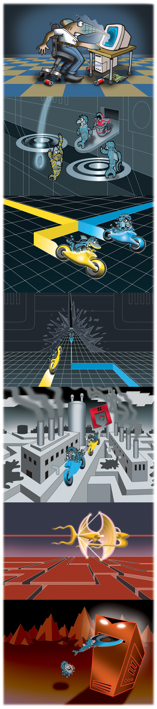 |
Music written and arranged by Jonathan Lewis. Lyrics by Ty Semaka and
Theo de Raadt. Synth, drum and bass programming by Jonathan Lewis,
guitar by Russ Broom, vocals by Jonny Sinclair.
Recorded, mixed, and mastered by Jonathan Lewis of
Moxam Studios (moxamstudios@hotmail.com).
|
OpenBSD 4.4 CD2 track 2 is an uncompressed copy of this song. 3:05 (MP3 5.6MB) (OGG 4.4MB) 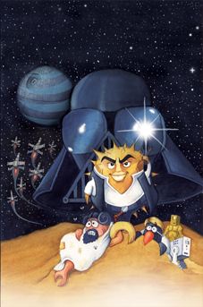 Nearly 10 years ago Kirk McKusick wrote a history of the Berkeley Unix distributions for the O'Reilly book "Open Sources: Voices from the Open Source Revolution". We recommend you read his story, entitled "Twenty Years of Berkeley Unix From AT&T-Owned to Freely Redistributable" first, to see how Kirk remembers how we got here. Sadly, since it showed up in book form originally, this text has probably not been read by enough people. The USL(AT&T) vs BSDI/UCB court case settlement documents were not public until recently; their disclosure has made the facts more clear. But the story of how three people decided to free the BSD codebase of corporate pollution -- and release it freely -- is more interesting than the lawsuit which followed. Sure, a stupid lawsuit happened which hindered the acceptance of the BSD code during a critical period. But how did a bunch of guys go through the effort of replacing so much AT&T code in the first place? After all, companies had lots of really evil lawyers back then too -- were they not afraid? After a decade of development, most of the AT&T code had already been replaced by university researchers and their associates. So Keith Bostic, Mike Karels and Kirk McKusick (the main UCB CSRG group) started going through the 4.3BSD codebase to cleanse the rest. Keith, in particular, built a ragtag team (in those days, USENIX conferences were a gold mine for such team building) and led these rebels to rewrite and replace all the Imperial AT&T code, piece by piece, starting with the libraries and userland programs. Anyone who helped only got credit as a Contributor -- people like Chris Torek and a cast of .. hundreds more. Then Mike and Kirk purified the kernel. After a bit more careful checking, this led to the release of a clean tree called Net/2 which was given to the world in June 1991 -- the largest dump of free source code the world had ever received (for those days -- not modern monsters like OpenOffice). Some of these ragtags formed a company (BSDi) to sell a production system based on this free code base, and a year later Unix System Laboratories (basically AT&T) sued BSDi and UCB. Eventually AT&T lost and after a few trifling fixes (described in the lawsuit documents) the codebase was free. A few newer developments (and more free code) were added, and released in June 1994 as 4.4BSD-Lite. Just over 14 years later OpenBSD is releasing its own 4.4 release (and for a lot less than $1000 per copy). The OpenBSD 4.4 release is dedicated to Keith Bostic, Mike Karels, Kirk McKusick, and all of those who contributed to making Net/2 and 4.4BSD-Lite free. |
|
Source Wars Episode IV Trial of the BSD Knights Not so very long ago and not so far away AT&T made system code and gave some bits away Some Berkeley geeks rebuilt it better, faster, more diverse This open thing was wonderful for everyone on Earth And then the roaring 90's came The Empire changed its mind And good old greed was back again The geeks were in a legal bind The Empire's Unix Lab sued BSDi from above The code is free but only we can sell it bub! The University came calling in full protective mode and proved the source in Net/2 didn't use the Empire's code Then Bostic brought the Empire's books n' slammed them dandys down And showed the giant chunks of BSD code all around They didn't even give an ounce of credit front to back This broke the license USL was using to attack The case was thrown out by the judge and "settled" out of court And UCB was big enough to take it like a sport And to this day the geekfolk say Now did we win or lose? They shoulda made 'em reprint every book with proper dues And take out ads in major rags apologetically And maybe now it wouldn't be the same monopoly The Empire might have tumbled down if everybody saw How greed became so big they couldn't see that glaring flaw But only one community the one that makes it tick Is there to fight for everyone exposing hypocrites And OpenBSD is here to tell the story right Once again the fight is fought and kept in shining light And may the source be with you May the Empire fall apart Ya like that's gonna happen! But we gotta keep heart! |
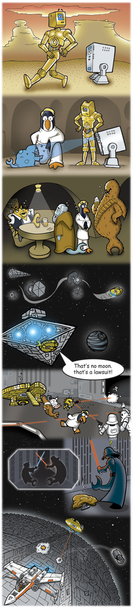 |
Music written and arranged by Jonathan Lewis. Lyrics and vocals by Ty Semaka.
Clarinet by Cedric Blary. Alto Sax 1 & 2, Tenor Sax by Lincoln Frey.
Drum, Bass, and Steel Drum programming by Jonathan Lewis.
Recorded, mixed, and mastered by Jonathan Lewis of
Moxam Studios (moxamstudios@hotmail.com).
|
OpenBSD 4.3 CD2 track 2 is an uncompressed copy of this song. 4:48 (MP3 8.2MB) (OGG 6.5MB) 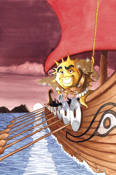 We are just plain tired of being lectured to by a man who is a lot like Naomi Campbell. In 1998 when a United Airlines plane was waiting in the queue at Washington Dulles International Airport for take-off to New Orleans (where a Usenix conference was taking place), one man stood up from his seat, demanded that they stop waiting in the queue and be permitted to deplane. Even after orders from the crew and a pilot from the cockpit he refused to sit down. The plane exited the queue and returned to the airport gangway. Security personnel ran onto the plane and removed this man, Richard Stallman, from the plane. After Richard was removed from the plane, everyone else stayed onboard and continued their journey to New Orleans. A few OpenBSD developers were on that same plane, seated very closeby, so we have an accurate story of the events. This is the man who presumes that he should preach to us about morality, freedom, and what is best for us. He believes it is his God-given role to tell us what is best for us, when he has shown that he takes actions which are not best for everyone. He prefers actions which he thinks are best for him -- and him alone -- and then lies to the public. Richard Stallman is no Spock. We release our software in ways that are maximally free. We remove all restrictions on use and distribution, but leave a requirement to be known as the authors. We follow a pattern of free source code distribution that started in the mid-1980's in Berkeley, from before Richard Stallman had any powerful influence which he could use so falsely. We have a development sub-tree called "ports". Our "ports" tree builds software that is 'found on the net' into packages that OpenBSD users can use more easily. A scaffold of Makefiles and scripts automatically fetch these pieces of software, apply patches as required by OpenBSD, and then build them into nice neat little tarballs. This is provided as a convenience for users. The ports tree is maintained by OpenBSD entirely separately from our main source tree. Some of the software which is fetched and compiled is not as free as we would like, but what can we do. All the other operating system projects make exactly the same decision, and provide these same conveniences to their users. Richard felt that this "ports tree" of ours made OpenBSD non-free. He came to our mailing lists and lectured to us specifically, yet he said nothing to the many other vendors who do the same; many of them donate to the FSF and perhaps that has something to do with it. Meanwhile, Richard has personally made sure that all the official GNU software -- including Emacs -- compiles and runs on Windows. That man is a false leader. He is a hypocrite. There may be some people who listen to him. But we don't listen to people who do not follow their own stupid rules. |
|
Puffy and the mighty Cryptonauts Trading with new lands by open C Corporate monsters, many closing passages Tempting harpies 13 years of treachery Journey's over, welcome home the heroes Offering the bounty of their trade Useful clothing spun from the golden fleece For the people, free and very strongly made But something's wrong with them They will not take our free wares "What's the matter good people? Why are you so scared? Why?" Then one brave soul spoke out "We're not allowed to take your gifts Hypocrites has spoken There are many new laws" Hypocrites appears "Puffy! You must obey my new rules!" "First rule one dictates You cannot give your code away" (In Greek) To your health, Nick, great bouzouki player and cool dude. "And rule two dictates You must give it to me So I can give it away properly for free" "The list goes on of course But for traders this is all you need" "This is madness! He has lost his mind! This defies the first law of free trade Rule zero came before this rule one Freedom means you cannot dictate to anyone" Then Hypocrites goes mad. |
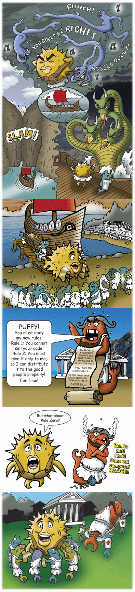 |
Music written and arranged by Jonathan Lewis. Lyrics by Ty Semaka and
Nikkos Diochnos. Vocals and bouzouki by Nikkos Diochnos. Baglama,
second bouzouki, violin, bass, and drum programming by Stelios Pulos,
né Jonathan Lewis. Guitar by Methodios Valtiotis, né Allen Baekeland.
Percussion by Pentelis Yiannikopulos, né Ben Johnson. Recorded, mixed,
and mastered by Jonathan Lewis of
Moxam Studios (moxamstudios@hotmail.com).
|
OpenBSD 4.2 CD2 track 2 is an uncompressed copy of this song. 4:40 (MP3 4.0MB) (OGG 6.4MB) 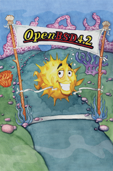 Those of us who work on OpenBSD are often asked why we do what we do. This song's lyrics express the core motivations and goals which have remained unchanged over the years - secure, free, reliable software, that can be shared with anyone. Many other projects purport to share these same goals, and love to wrap themselves in a banner of "Open Source" and "Free Software". Given how many projects there are one would think it might be easy to stick to those goals, but it doesn't seem to work out that way. A variety of desires drag many projects away from the ideals very quickly. Much of any operating system's usability depends on device support, and there are some very tempting alternative ways to support devices available to those who will surrender their moral code. A project could compromise by entering into NDA agreements with vendors, or including binary objects in the operating system for which no source code exists, or tying their users down with contract terms hidden inside copyright notices. All of these choices surrender some subset of the ideals, and we simply will not do this. Sure, we care about getting devices working, but not at the expense of our original goals. Of course since "free to share with anyone" is part of our goals, we've been at the forefront of many licensing and NDA issues, resulting in a good number of successes. This success had led to much recognition for the advancement of Free Software causes, but has also led to other issues. We fully admit that some BSD licensed software has been taken and used by many commercial entities, but contributions come back more often than people seem to know, and when they do, they're always still properly attributed to the original authors, and given back in the same spirit that they were given in the first place. That's the best we can expect from companies. After all, we make our stuff so free so that everyone can benefit -- it remains a core goal; we really have not strayed at all in 10 years. But we can expect more from projects who talk about sharing -- such as the various Linux projects. Now rather than seeing us as friends who can cooperatively improve all codebases, we are seen as foes who oppose the GPL. The participants of "the race" are being manipulated by the FSF and their legal arm, the SFLC, for the FSF's aims, rather than the goal of getting good source into Linux (and all other code bases). We don't want this to come off as some conspiracy theory, but we simply urge those developers caution -- they should ensure that the path they are being shown by those who have positioned themselves as leaders is still true. Run for yourself, not for their agenda. The Race is there to be run, for ourselves, not for others. We do what we do to run our own race, and finish it the best we can. We don't rush off at every distraction, or worry how this will affect our image. We are here to have fun doing right.
|
|
The starting line is nervous we burst upon the course Electric is our passion An open hearted force The water's full of dangers That interrupt the flow And soon the spirit splinters as temptation takes its toll *Give and get back some Sharing it all Path we know best we're having a ball Opulent mission Lost in our passion You can still choose If you don't swim to win you'll never lose* One Zero Zero Zero Zero One The window is a wall by now A sieve of sickened holes The water chicken stealing maps Mistaking us for foes The sun a son of Icarus Flies too close to itself Forbidden fruit is blinded by the toys upon the shelf *CHORUS* One Zero One Zero One Zero One Slow and steady wins they say but this is not a race It's not about who takes a prize for first or second place Imaginary rings of brass Were traded for real goals The vision and the mission lost For those with corporate souls *Give and get back some Sharing it all Path we know best we're having a ball Give and get zeros Give and get ones Given to you but Not you to us Opulent mission Lost in our passion You can still choose If you don't swim to win you'll never lose You'll never lose* |
 |
Music written and arranged by Jonathan Lewis. Recorded, mixed and
mastered by Jonathan Lewis of
Moxam Studios (moxamstudios@hotmail.com).
Vocals by Duncan McDonnald (www.thegreatgavalan.com). Drums by
John McNeil. Guitar by Jeff Drummond. Bass and keyboards by
Jonathan Lewis. Lyrics by Ty Semaka and Theo de Raadt.
|
OpenBSD 4.1 CD2 track 2 is an uncompressed copy of this song. 4:19 (MP3 4.1MB) (OGG 8.3MB) 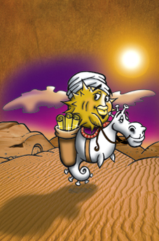 As developers of a free operating system, one of our prime responsibilities is device support. No matter how nice an operating system is, it remains useless and unusable without solid support for a wide percentage of the hardware that is available on the market. It is therefore rather unsurprising that more than half of our efforts focus on various aspects relating to device support. Most parts of the operating system (from low kernel, through to libraries, all the way up to X, and then even to applications) use fairly obvious interface layers, where the "communication protocols" or "argument passing" mechanisms (ie. APIs) can be understood by any developer who takes the time to read the free code. Device drivers pose an additional and significant challenge though: because many vendors refuse to document the exact behavior of their devices. The devices are black boxes. And often they are surprisingly weird, or even buggy. When vendor documentation does not exist, the development process can become extremely hairy. Groups of developers have found themselves focused for months at a time, figuring out the most simple steps, simply because the hardware is a complete mystery. Access to documentation can ease these difficulties rapidly. However, getting access to the chip documentation from vendors is ... almost always a negotiation. If we had open access to documentation, anyone would be able to see how simple all these devices actually are, and device driver development would flourish (and not just in OpenBSD, either). When we proceed into negotiations with vendors, asking for documentation, our position is often weak. One would assume that the modern market is fair, and that selling chips would be the primary focus of these vendors. But unfortunately a number of behemoth software vendors have spent the last 10 or 20 years building political hurdles against the smaller players. A particularly nasty player in this regard has been the Linux vendors and some Linux developers, who have played along with an American corporate model of requiring NDAs for chip documentation. This has effectively put Linux into the club with Microsoft, but has left all the other operating system communities -- and their developers -- with much less available clout for requesting documentation. In a more fair world, the Linux vendors would work with us, and the device driver support in all free operating systems would be fantastic by now. We only ask that users help us in changing the political landscape. |
|
Here's an old story ... Puffy Baba and the 40 Vendors We all know the details Magic cave, magic words, some thieves, some serious loot, and lucky - Mister - Baba Who got a bad rap if you ask me The little guy who did the best with what he had Here are Mr. Baba's lessons Load one ass, take a few trips and spend in moderation Three things the average man can't - get - right If you know your brother is a greedy bastard never give him the password If he goes penguin on you, stop - being - his brother. When a cave is guarded by magic lawyers A sea of blood will be its doormat So do the best with what you have Beyond the lessons - you must know this that the Devil is as real as your address But unlike Vendors, he at least keeps the door open Vendors of water that should be free Look upon their words and despair Their badvertising made a thief of my brother then made him better off dead Now he hasn't got shit to do his best with Gratis. Free. Libre. Cuffo. The companies of thieves stole every good adjective and left us with open source (sores) sharing smaller and smaller bandages for each consecutive cut But with the salty water of labour parched desert becomes pregnant black soil It's not whether you're well off it's where you dig the well The best the little guy can do is what the little guy does right |
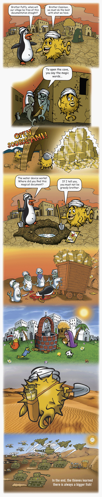 |
Recorded, mixed and mastered by Jonathan Lewis of
Moxam Studios (moxamstudios@hotmail.com).
Voice by Richard Sixto. Lyrics by Ty Semaka.
|
This is the extra song on the
"The Songs 3.0 - 4.0" Audio CD.
4:00 (MP3 3.9MB) (OGG 6.0MB) This is an extra track by the artist Ty Semaka (who really has "had Puffy on his mind") which we included on the "The Songs 3.0 - 4.0" audio CD. This song details the process that Ty has to go through to make the art and music for each OpenBSD release. Ty and Theo really do go to a (very specific) bar and discuss what is going on in the project, and then try to find a theme that will work... Order this CDROM from the OpenBSD Store. The 1st OpenBSD Audio CD "The Songs 3.0 - 4.0" celebrates the artwork and songs that have been released with each OpenBSD release. All the songs from the 3.0 to 4.0 releases are included (plus this bonus track). Includes an 11cm silver-on-clear die-cut wireframe Puffy sticker! |
|
Be Open Be Vocal Stay Open Stay Vocal (repeat) OpenBSD Twice a year, me an' Theo Theorize over beer at the Ship and outhip all the misers and take strips out of liars. He sits me down and he tries to explain: He says "The badabadabingabanger button on the raidorama cuttin' on the systematicalifornication and a license application is a fishybomination and a random allocation got a copywritten melanoma sasafrazzin' wireless device". OK stop. I get it. Some asshole lied. And then he says, "The crashorama villaination lawyerific pornication threatifies the only honest hackerammerunderider in the cyber cider documation universal anagrama-attic (I'm outta here) cohabitationizizingation" OK stop. I get it. Some asshole said he was "open" but he was only open for business. I get it. Where's my pencils? Bring me my mic! |
Be Open Be Vocal Stay Open Stay Vocal (repeat) Then he has another beer and gets all, you know, pushy. Make Puffy kill pussies? And too much thinkin' and kitchen sinkin' the drawings or toons I should say, where a fish can talk, be an agent a hit man or walk, and ride horses and forces my hand to make Puffy a spy or a cowboy, or WHY a little girl, in a dream and fake Floyd as the theme? And squeeze in five concepts every time, every song! And the geeks and Theo lose it if I draw the device wrong! "It's four little buttons not five Ty" And pretty soon I'll be losing my mind cause it's a f@#!kin' cartoon! (beat boxin') |
|
OpenBSD 4.0 CD2 track 2 is an uncompressed copy of this song. 2:40 (MP3 2.3MB) (OGG 3.6MB) 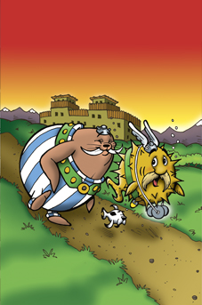 The last 10 years, every 6 month period has (without fail) resulted in an official OpenBSD release making it to the FTP servers. But CDs are also manufactured, which the project sells to continue our development goals. While tests of the release binaries are done by developers around the world, Theo and some developers from Calgary or Edmonton (such as Peter Valchev or Bob Beck) test that the discs are full of (only) correct code. Ty Semaka works for approximately two months to design and draw artwork that will fit the designated theme, and coordinates with his music buddies to write and record a song that also matches the theme. Then the discs and all the artwork gets delivered to the plant, so that they can be pressed in time for an official release date. This release, instead of bemoaning vendors or organizations that try to make our task of writing free software more difficult, we instead celebrate the 10 years that we have been given (so far) to write free software, express our themes in art, and the 5 years that we have made music with a group of talented musicians. OpenBSD developers have been torturing each other for years now with Humppa-style music, so this release our users get a taste of this too. Sometimes at hackathons you will hear the same songs being played on multiple laptops, out of sync. It is under such duress that much of our code gets written. We feel like Pufferix and Bobilix delivering The Three Discs of Freedom to those who want them whenever the need arises, then returning to celebrate the (unlocked) source tree with all the other developers. |
|
Humppa negala Humppa negala Humppa negala Venismechah Humppa negala Humppa negala Humppa negala Venismechah Humppa neranenah Humppa neranenah Humppa neranenah Venismechah Humppa neranenah Humppa neranenah Humppa neranenah Venismechah Uru, uru achim! Uru achim b'lev sameach Uru achim b'lev sameach Uru achim b'lev sameach Uru achim b'lev sameach uru achim! uru achim! OpenBSD! (circus torture) Humppa negala Humppa negala Humppa negala Venismechah Humppa negala Humppa negala Humppa negala Venismechah Humppa neranenah Humppa neranenah Humppa neranenah Venismechah Humppa neranenah Humppa neranenah Humppa neranenah Venismechah Uru, uru achim! Uru achim b'lev sameach Uru achim b'lev sameach Uru achim b'lev sameach Uru achim b'lev sameach uru achim! uru achim! OpenBSD! |
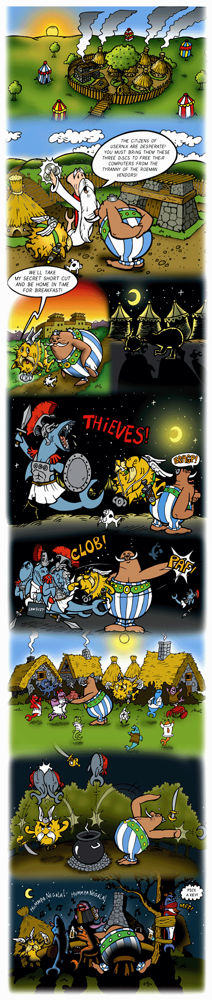 |
Based on the traditional Jewish song "Hava Nagilah" composed by Anonymous.
Section of "Enter The Gladiators" (circus theme) composed by Julius Fucik.
Recorded, mixed and mastered by Jonathan Lewis of
Moxam Studios (moxamstudios@hotmail.com).
Accordion, Tuba and drums by Jonathan Lewis. Vocals by
Ty Semaka & Jonathan Lewis.
|
OpenBSD 3.9 CD2 track 2 is an uncompressed copy of this song. 4:00 (MP3 7.6MB) (OGG 6.0MB) 
OpenBSD emphasizes security. It also emphasizes openness. All the code is there for all to see. Blobs are vendor-compiled binary drivers without any source code. Hardware makers like them because they obscure the details of how to make their hardware work. They hide bugs and workarounds for bugs. Newer versions of blobs can weaken support for older hardware and motivate people to buy new hardware. Blobs are expedient. Many other open source operating systems cheerfully incorporate them; in fact their users demand them. But when you need to trust the system, how do you check the blob for quality? For adherence to standards? How do you know the blob contains no malicious code? No incompetent code? Inspection is impossible; you can only test the black box. And when it breaks, you have no idea why.
This release, like every OpenBSD release, contains OpenBSD and its source code. It runs on a wide variety of hardware. It contains many new features and improvements. OpenBSD does attempt to convince vendors to release documentation, and often reverse-engineers around the need for blobs. OpenBSD remains blob-free. Anyone can look at it, assess it, improve it. If it breaks, it can be fixed. |
|
Little baby Blobby was a cute little baby when we found him on the beach, there was nothin' shady you could bounce him on your knee like a ba-ba-ball and his first little word was adorable He said a blah blah blah blah blah blah blah blah Blah! Thin edge of the wedge? But everybody was so happy - about Blob Blob was popular at school he was helpful too He could get your motor runnin' with a drop of goo He was givin' it away never charged a dime But by the time he graduated Blob was business slime! He was a blah blah blah blah blah blah blah blah blah blah blah blah blah blah blah blah He's givin' you the Evil Eye! Now everybody had it they was drivin' around They was givin' up their freedoms for convenience now Blobbin' up the freeway, water black as pitch And somehow little Blobby was a growin' rich! He was a blah blah blah blah blah blah blah blah blah blah blah blah blah blah blah blah blah blah blah blah blah blah blah blah It's linkin' time! Now it was out of control n' fishy's came to depend on Blobby's Blob Blah, seemed to be no end Then his empire spread and to their surprise Blobby been a growin' to incredible size! He's a blah blah blah blah blah blah blah blah blah blah blah blah blah blah blah blah blah blah blah blah blah blah blah blah blah blah blah blah blah blah blah blah B-b-b-b-b-b-b-b-b Then along came a genius Doctor Puffystein And he battled the Blob who had crossed the line He was 50 feet tall - Doctor said "No fear" I got a sample of Blob I can reverse engineer! But it was too late! Blob was takin' over the world! He wants your video! Ya he wants your net! He wants your drive! He wants it all!! Somebody help us! Noooooooo! NVIDIA! Intel! Atheros! 3-Ware! VIA! ATI! Broadcom! TI! Myricom! HighPoint! Adaptec! Mylex! ICP Vortex! and IBM! Takin' over the world! |
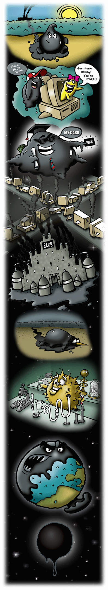 |
Music composed by Ty Semaka and Jonathan Lewis.
Recorded, mixed and mastered by Jonathan Lewis of
Moxam Studios (moxamstudios@hotmail.com).
Vocals and Lyrics by Ty Semaka &
Theo de Raadt.
Bass guitar, organ and bubbles by Jonathan Lewis.
Guitar by Tom Bagley.
Drums by Jim Buick.
|
OpenBSD 3.8 CD2 track 2 is an uncompressed copy of this song. 4:24 (MP3 8.1MB) (OGG 5.6MB) Instrumental version (MP3 8.0MB) (OGG 5.5MB) 
For a multitude of (stupid) reasons, vendors often attempt to lock out our participation with their customers by refusing to give our programmers sufficient documentation so that we can properly support their devices. Take Adaptec for instance. Before the 3.7 release we disabled support for the aac(4) Adaptec RAID driver because negotiations with the Adaptec had failed. They refused to give us documentation. Without documentation, support for their controller had always been poor. The driver had bugs (which affected some users more than others) which caused crashes, and of course there was no RAID management support. Apparently most of these bugs are because the Adaptec controllers have numerous buggy firmware issues which require careful workarounds; without documentation we cannot solve these issues. The driver was written by an OpenBSD developer, who cribbed parts of it from a FreeBSD driver written by an ex-Adaptec employee. But no public documentation exists, and Adaptec has dozens of cards with different firmware issues. All of this adds up to a very desperate development model -- it becomes very hard for the principle of "quality" to show its head.
RAID devices have two main qualities that people buy them for:
Some vendors (or like the above Adaptec case, ex-employee) have sometimes given us some documentation so that we could write drivers, so that their devices could support Redundancy. But these vendors have never given us any documentation for performing Repairs. Instead these vendors have tried to pass out non-free RAID management tools. These are typically gigantic Linux binaries, or some crazy thing, that is supposed to work through a bizarre interface in the device driver, which we are apparently supposed to write code for without any documentation. And since we refuse to accept our users being forced into depending on vendor binaries, we have reverse engineered the management interface for the AMI controllers. There is no great "intellectual property" in this stuff, it is all rather simple primitives. This is all that we need to implement basic RAID management:
The AMI driver needed to support these small primitive operations. And once we had that, we rely on something else which we know: Almost all the RAID controllers would need the same primitives. Thus armed, we were able to write a generic framework which would later work on other vendors' RAID cards, that is, once we get documentation or do some reverse engineering for their products. But having been ignored for so long by these vendors, it is not clear when (if ever) we will get around to writing that support for Adaptec RAID controllers now. And Adaptec has gone and bought ICP Vortex, which may mean we can never get documentation for the gdt(4) controllers. The "Open Source Friendly liar" IBM owns Mylex, and Mylex has told us we would not get documentation, either. 3Ware has lied to us and our users so many times they make politicians look saintly. Until other vendors give us documentation, if you want reliable RAID in OpenBSD, please buy LSI/AMI RAID cards. And everything will just work.
And keep pestering the other vendors.
|
|
Narrator:
Welcome friends to the adventures of Puffiana Jones! Brought to you by the good people at OpenBSD! Whether braving jungles of wires, oceans of code, or hacking the most treacherous of crypts, one fish fights for justice. With bravery and morality like none other, one name rings true. Puffiana Jones, famed hackologist and adventurer! Tracking down valuable artifacts and returning them to the public from the steely grip of greed. Many a villain has he pummeled, many a vile vendor has he thwarted, countless thugs, lawyers and kitties abound. Join us now in his latest adventure. Hackers of the Lost RAID! Marlus: Puffy, this mission will be dangerous. Puffy: I'm a careful guy Marlus. Puffy and Salmah: They're hacking in the wrong place! Beluge: You will never get the documentation Jones! Ah ha ha ha ha! Puffy: Now you're gettin' nasty. Puffy: SCSI's, why'd it have to be SCSI's? Salmah: API's, very dangerous. You go first. Narrator: Through thick and thin our hero persists, until finally, there before him lies the answer of the ages. How to get OpenBSD, the world's most secure operating system, to communicate with the lost RAID. But alas, he is foiled once again by the evil Neozis. Again he must chase the truth. Will our hero prevail? Triumphant again! Join us next time for the continuing adventures of Puffiana Jones! |
 |
Music composed by Ty Semaka and Jonathan Lewis.
The Moxam Orchestra programmed and played by Jonathan Lewis.
Vocals and Lyrics by Ty Semaka. Drums by Charlie Bullough.
Recorded, mixed and mastered by Jonathan Lewis of
Moxam Studios (moxamstudios@hotmail.com).
|
OpenBSD 3.7 CD2 track 2 is an uncompressed copy of this song. 10:08 (MP3 18MB) (OGG 13MB) 
For an operating system to get anywhere in "the market" it must have good device support. Ethernet was our first concern. Many vendors refused to supply programmers with programming documentation for these chipsets. Donald Becker (Linux) and Bill Paul (FreeBSD) changed the rules of the game here: They wrote drivers for the chipsets that they could get documentation for, and as they succeeded in writing more and more drivers, eventually closed vendors slowly opened up until most ethernet chipset documentation was available. Today, some vendors still resist releasing ethernet chipset documentation (ie. Broadcom, Intel, Marvell/SysKonnect, NVIDIA) but the driver problem is mostly solved in the ethernet market. Similar problems have happened in the SCSI, IDE, and RAID markets. Again, the problem was solved by writing drivers for documented devices first. If the free software user communities use those drivers preferentially, it is a market loss for the secretive vendors. Another approach that has worked is to publish email addresses and phone numbers for the marketing department managers in these companies. These email campaigns have worked almost every time. The new frontier: 802.11 wireless chipsets. Over the last six months, this came to a head in the OpenBSD project. We asked our users to help us petition numerous vendors so that we could get chipset documentation or redistributable firmware. Certainly, we did not succeed for some vendors. But we did influence some vendors, in particular the Taiwanese (Ralink and Realtek), who have given us everything we need. We also reverse engineered the Atheros chipsets. Want to help us? Avoid Intel Centrino, Broadcom, TI, or Connexant PrismGT chipsets. Heck, avoid buying even regular old pre-G Prism products, to send a message. If you can, buy 802.11 products using chips by Realtek, Ralink, Atmel, ADMTek, Atheros. Our manual pages attempt to explain which vendors (ie. D-Link) box which chipsets into which product. Send a message that open support for hardware matters. A vendor in Redmond largely continues their practices because they get the chipset documentation years before everyone else does. What really upsets us the most is that some Linux vendors are signing Non-Disclosure Agreements with vendors, or contracts that let them distribute firmwares. Meanwhile both Linux and FSF head developers are not asking their communities to help us in our efforts to free development information for all, but are even going further and telling their development communities to not work with us at pressuring vendors. It is ridiculous. |
|
The heroine is deaf to her device her uncles on the farm, send out the alarm and the shit storm flies E-maelstrom is lifting up the house With Puffathy inside, twisting up a ride to the land of OS Hard landing, the packets celebrate The wicked lawyers dead The open slippers red are Hers to take Ding dong the lawyer's dead You're off to see the Wizard kid The north witch instructed Puffathy To get yourself back home Take this yellow road and You'll be fine Believe in the open ruby shoes Now go to see the Wiz and give Taiwan your biz You'll never lose The 3 friends she made along the way Were nice but pretty lame, lazy and insane but they sang OK Ding dong the lawyer's dead You're off to see the Wizard kid Finally we're through the trees The city glows It's positively green Pompously the wizard booms He wants the broom of triple 'w' Go to the west You must pass the test For me Bring me the ride of the witch I despise And you'll be free You don't need the broom You don't need the shoes You don't need the wiz You will never lose You have all you need You always had heart You always had courage Did somebody fart? You always had brains You answered each call And this may surprise you But you've got some balls So double click heels and work with Taiwan And speak to your doggie You're already gone.... |
 |
Lyrics and vocal melody written by Ty Semaka.
Main vocals by Jonathan Lewis, sung female vocals by Adele Legere,
Puffathy (little girl voice) by Anita Miotti, monkeys and laughing by Ty
Semaka,
guitar by Reed Shimozawa, drums, bass and all other sounds programmed by
Jonathan Lewis. Co-Arranged by Ty Semaka & Jonathan Lewis.
Recorded, mixed and mastered by Jonathan Lewis at
Moxam Studios (moxamstudios@hotmail.com).
|
OpenBSD 3.6 CD2 track 2 is an uncompressed copy of this song. 4:00 (MP3 7.7MB) (OGG 5.2MB) 
What is up with some free software providers?! They say "Here's something free! Oh wait, I changed my mind." While not exactly bait-and-switch, this is something which has been causing the community continual grief, and therefore we decided to honour a few of the projects that have decided to go non-free. After all.. having gone non-free, no one is going to remember them in the end. This song is dedicated to a few worthy groups who have made this Free-to-Non-Free transition with their offerings in the last few years:
|
|
Well he rode from the ocean far upstream Nuthin' to his name but a code and a dream Lookin' for the legendary inland sea Where the water was deep n' clean n' free
But the town he found had suffered a blow
So Puff made a brand and he tanned his hide
But it didn't take long 'fore the filter plugged
Then he found the Mayor was addin' the crud!
So he rolled up-gulch till he hit the lake
I'll hang a lickin' on every one
That's right! |
 |
Vocals, Lyrics, Melody and Co-Arrangement by Ty Semaka - Guitar by
Chantal Vitalis - Bass by Jonny Nordstrom - Drums by John McNiel,
Fiddle - Co-Arrangement, Recording, Mixing, Mastering by Jonathan Lewis of
Moxam Studios (moxamstudios@hotmail.com).
|
OpenBSD 3.5 CD2 track 2 is an uncompressed copy of this skit & song. 5:21 (MP3 9.7MB) (OGG 6.8MB) 
A common theme used by the comedy crew Monty Python was to emphasize and exaggerate ridiculousnesses that their target had imposed upon themselves. Few things could be considered as humorous as making a redundancy protocol... redundant; e.g. being forced to replace it by Cisco lawyers and IETF policy. We've been working a few years now on our packet filtering software pf(4) and it became time to add failover. We want to be able to set up pf firewalls side by side, and exchange the stateful information between them, so that in case of failure another could take over 'keep state' sessions. Our pfsync(4) protocol solves this problem. However, on both sides of the firewall, it is also necessary to have all the regular hosts not see a network failure. The only reliable way to do this is for both firewall machines to have and use the same IP and MAC addresses. But the only real way to do that is to use multicast protocols. The IETF community proposed work in this direction in the late 90's, however in 1997 Cisco informed them that they believed some of Cisco's patents covered the proposed IETF VRRP (Virtual Router Redundancy Protocol); on March 20, 1998 they went further and specifically named their HSRP "Hot Standby Router Protocol" patent. Reputedly, they were upset that IETF had not simply adopted the flawed HSRP protocol as the standard solution for this problem. Despite this legal pressure, the IETF community forged ahead and published VRRP as a standard even though there was a patent in the space. Why? There was much deliberation at all levels of the IETF, and unfortunately for all of us the politicians within eventually decided to allow patented technology in standards -- as long as the patented technology is licensed under RAND (Reasonable And Non Discriminatory) terms. As free software programmers, we therefore find ourselves in the position that these RAND standards must not be implemented by us, and we must deviate from the standard. We find all this rather Unreasonable and Discriminatory and we *will* design competing protocols. Some standards organization, eh? Due to some HSRP flaws fixed by VRRP and for compatibility with the (HSRP-licensed) VRRP implementations of their competitors, Cisco in recent times has largely abandoned HSRP and now relies on VRRP instead -- a protocol designed for and by the community, but for which they claim patent rights. On August 7 2002, after many communications, Robert Barr (Cisco's lawyer) firmly informed the OpenBSD community that Cisco would defend its patents for VRRP implementations -- meaning basically that it was impossible for a free software group to produce a truly free implementation of the IETF standard protocol. Perhaps this is because Cisco and Alcatel are currently engaged in a pair of patent lawsuits; a small piece of which is Cisco attempting to use the HSRP patent against Alcatel for their use of VRRP. Some IETF working group members took note of our complaints, however an attempt in April 2003 to have the IETF abandon the use of patented technology failed to "reach consensus" in the IETF. A few years ago, the W3C, who designs our web protocols, tried to move to a RAND policy as well (primarily because of pressure from Microsoft and Apple), but the community outrage was so overpowering that they backed down. Some standards groups use this policy, while others avoid it -- the one differentiation being the amount of corporate participation. In the IETF, the pro-RAND agents work for AT&T, Alcatel, IBM, Cisco, Microsoft, and other large companies. Since IETF is an open forum, they can blend in as the populace, and vote just like all others, except against the community. Translation: In failing to "reach consensus", the companies who benefit from RAND won, and the community lost again. Left with little choice, we proceeded to reinvent the wheel or, more correctly, abandon the wheel entirely and go for a "hovercraft". We designed CARP (Common Address Redundancy Protocol) to solve the same problem that these other protocols are designed for, but without the same technological basis as HSRP and VRRP. We read the patent document carefully and ensured that CARP was fundamentally different. We also avoided many of the flaws in HSRP and VRRP (such as an inherent lack of security). And since we are OpenBSD developers, we designed it to use cryptography. The combination of pf(4), pfsync(4), and carp(4) has permitted us to build highly redundant firewalls. To date, we have built a few networks that include as many as 4 firewalls, all running random reboot cycles. As long as one firewall is alive in a group, traffic through them moves smoothly and correctly for all of our packet filter functionality. Cisco's low end products are unable to do this reliably, and if they have high end products which can do this, you most certainly cannot afford them. As a final note of course, when we petitioned IANA, the IETF body regulating "official" internet protocol numbers, to give us numbers for CARP and pfsync our request was denied. Apparently we had failed to go through an official standards organization. Consequently we were forced to choose a protocol number which would not conflict with anything else of value, and decided to place CARP at IP protocol 112. We also placed pfsync at an open and unused number. We informed IANA of these decisions, but they declined to reply.
This ridiculous situation then inspired one of our developers to create
this parody of the well-known Monty Python skit and song.
|
|
Customer: Hello, I would like to buy a CARP license please. Licenser: A what? Customer: A license for my network redundancy protocol, CARP. Licenser: Well, it's free isn't it? Customer: Exactly, the protocol's name is CARP. CARP the redundancy protocol. Licenser: What? Customer: He is an.... redundancy protocol. Licenser: CARP is a free redundancy protocol! Customer: Yes, I chose it out of three, I didn't like the others, they were all too... encumbered. And now I must license it! Licenser: You must be a looney. Customer: I am not a looney! Why should I be tied with the epithet looney merely because I wish to protect my redundancy protocol? I've heard tell that Network Associates has a pet algorithm called RSA used in IETF standards, and you wouldn't call them a looney; Geoworks has a claim on WAP, after what their lawyers do to you if you try to implement it. Cisco has two redundant patents, both encumbered, and Cadtrack has a patent on cursor movement! So, if you're calling the large American companies that fork out millions of dollars for the use of XOR a bunch of looneys, I shall have to ask you to step outside! Licenser: Alright, alright, alright. A license. Customer: Yes. Licenser: For a free redundancy protocol? Customer: Yes. Licenser: You are a looney. Customer: Look, it allows for bleeding redundancy doesn't it? Cisco's got a patent for the HSRP, and I've got to get a license for me router VRRP. Licenser: You don't need a license for your VRRP. Customer: I bleeding well do and I got one. It can't be called VRRP without it. Licenser: There's no such thing as a bloody VRRP license. Customer: Yes there is! Licenser: Isn't! Customer: Is! Licenser: Isn't! Customer: I bleeding got one, look! What's that then? Licenser: This is a Cisco HSRP patent document with the word "Cisco" crossed out and the word "IETF" written in in crayon. Customer: The man didn't have the right form. Licenser: What man? Customer: Robert Barr, the man from the redundancy detector van. Licenser: The looney detector van, you mean. Customer: Look, it's people like you what cause unrest. Licenser: What redundancy detector van? Customer: The redundancy detector van from the Monopoly of Cizzz-coeee. Licenser: Cizzz-coeee? Customer: It was spelt like that on the van. I'm very observant! I never seen so many bleeding aerials. The man said that their equipment could pinpoint a failover configuration at 400 yards! And my Cisco router, being such a flappy bat, was a piece of cake. Licenser: How much did you pay for that? Customer: Sixty quid, and twenty grand for the PIX. Licenser: What PIX? Customer: The PIX I'm replacing! Licenser: So you're replacing your PIX with free software, and yet you want to license it? Customer: There's nothing so odd about that. I'm sure they patented this protocol too. After all, the IETF had a hand in it! Licenser: No they didn't! Customer: Did! Licenser: Didn't! Customer: Did, did, did and did! Licenser: Oh, all right. Customer: Spoken like a gentleman, sir. Now, are you going to give me a CARP license? Licenser: I promise you that there is no such thing. You don't need one. Customer: In that case, give me a Firewall License. Licenser: A license? Customer: Yes. Licenser: For your firewall? Customer: No. Licenser: No? Customer: No, half my firewall. It had an accident. Licenser: You're off your chump. Customer: Look, if you intend by that utilization of an obscure colloquialism to imply that my sanity is not entirely up to scratch, or indeed to deny the semi-existence of my little half firewall, I shall have to ask you to listen to this! Take it away CARP the orchestra leader! A zero... one.. A one zero one one VRRP, philosophically, must ipso facto standard be But standard it needs to be free vis a vis the IETF you see? But can VRRP be said to be or not to be a standard, see, when VRRP can not be free, due to some Cisco patentry.. Singing... La Dee Dee, 1, 2, 3. VRRP ain't free. O P E N B S D CARP is free Is this wretched Cisco-eze let through IETF to mean my firewall must pay legal fees? No! CARP and PF are Free! Fiddle dee dum, Fiddle dee dee, CARP and PF are free. 1 1 2, Tee Hee Hee, CARP and PF are free. My firewall just keeps running, see, bisected accidentally, one summer afternoon by me. Redundancy's good when free. Redundancy must be free. Redundancy must be free. The End Under the Geddy Lee? No, Redundancy must be free! Geddy must be free. |
 |
"CARP License" sketch:
Tony Binns as the Customer, Peter Rumpel as the Licenser.
"Redundancy must be free" song:
Lead vocal by Peter Rumpel, backing vocals by Jonathan Lewis and Ty Semaka.
Piano by Janet Lewis, acoustic guitars by Chantal Vitalis.
Bass and Geddy Lee questioning by Jonathan Lewis.
Lyrics by Bob Beck.
|
OpenBSD 3.4 CD2 track 2 is an uncompressed copy of this song. 3:30 (MP3 7.0MB) (OGG 5.1MB) 
Join Puffy Hood and his Funny Fish as they take on the Sheriff (an unelected leader) and other evil forces of the draconian government!
Two years ago we became involved with the University of Pennsylvania and DARPA, who were funding us to do security research and development .. on things that we were already intending to do. We provided ideas, wrote papers, and deployed cutting-edge technology; DARPA provided finances and reaped a share of the credit, and the University of Pennsylvania acted as a middle-man. We accepted funding based on the promise that our freedom to operate as we wished was unaffected. To us, freedom is more important than funding -- heck, we were dealing with the evil forces of government, and needed to be careful. A few months prior to this release, DARPA suddenly and without warning decided to withdraw that funding; they also aggressively backed out of contractual obligations. Many articles in the press followed regarding this sudden maneuver. Apparently this hoopla happened because an OpenBSD-related article in the Canadian newspaper The Globe & Mail had quoted Theo de Raadt making anti-war statements regarding Iraq and the theft of oil. The only answer given (to major media reporters) by a DARPA spokesperson (Jan Walker) was this: "As a result of the DARPA review of the project, and due to world events and the evolving threat posed by increasingly capable nation-states, the Government on April 21 advised the University to suspend work on the "security fest" portion of the project." That almost toes the line of calling us terrorists! We had lost financial support, but the release of the statement above suddenly made us very happy to be free of any perceived obligation to such crazy people. Since the termination came near natural contract termination (about 4 months remained), less damage than expected was sustained by the project. Sponsors stepped forward and helped us make up the missing funds we needed to run our "Hackathon", and the event proceeded as planned. We even had T-shirts made with "Workstations of Mass Development" artwork for those developers who attended (sorry, they are not for sale). We could not make stories like this up. So instead, we are making up an allegory about it, using the tale of Robin Hood. |
|
Sir Puffy of Ramsay was a wandrin' Through forests of seaweed all alone He had found the crusades were an endless charade So for now he called Nothing Hack home One day he met Little Bob of Beckley Beat him fair on a log-in by staff Clever chums they did find other fish of their kind Thwarting evil with humppa and math Now trouble was a brewin' when the Good King was away The Sheriff came a callin' for the poor to pay With CD's and their freedom for to share online And burning down the village cause he was a slime So Puffy and his buddies took the booty from the rich and turned it into a system to protect poor fish Sent out by Hook or a Wim to the teaming schools Town cryers were on fire cause the crypto ruled! Chorus: They called it "BSD"! And "Open" because it's always free So raise up your glass and three cheers to the Funny Fish for never running and making something good! And here's to Puffy Hood! Aaaw! Word to the sea y'all The Hood's a bad ball Ya underneath he's a heathen and a traitor He can take from you all and say "later!" Think he's a hero? Naw he ain't lovin' ya He gettin' richer than Bill Gates and Dubya Read the Wanted poster of Sheriff Plac-o-derm fool We gettin' back the booty or we take away your worms too Yo! Word to the classes Put on your glasses I guess the Sheriff is King till this passes Times are a changin' and movin' so fast He says "Give me your freedom, I'll grasp it and pass it to brass who can hash it for weapons of massive distraction. And hand me the bastards that brashly amassed from the cash happy faction of oily and gassy co-action". No! Don't hand em dick, grab a stick, keep attacking for freedom and hack till the King cometh back and leave em' Then trouble was a rollin' with an army on the run The Sheriff came a callin' for the spikey one And took back all the booty Puff intended for the poor The Arch-a-thon went on despite the mighty roar Puff snuck into the castle, and found the treasure hill And also found Maid Marlin held against her will He loaded all the loot to give it back and big surprise He took the maiden too, 'cause she was easy on the eyes Chorus: They called it "BSD"! And "Open" because it's always free So raise up your glass and three cheers to the Funny Fish for never running and making something good! And here's to Puffy Hood! |
 |
Music, Co-arrangement, Recording, Mixing, Drum Programming,
Bass, Organ, and Violin by Jonathan Lewis.
Co-Arrangement, Lyrics, and Main Vocals by Ty Semaka.
Back-vocals by Bob Beck, Calvin Beck, Theo de Raadt, Alan Kolodziejzyk,
Jonathan Lewis & Peter Valchev.
Rap #1 by Richard Sixto.
Guitar by Chantal Vitalis.
|
OpenBSD 3.3 CD2 track 2 is an uncompressed copy of this song. 4:00 (MP3 7.5MB) (OGG 3.3MB) 
Like other Barbarians before him, Puff has had to face some pretty crazy challenges. This song is an allegory of the recent difficulties we went through dealing with Sun, who refused our request for documentation about their UltraSPARC III processors. We want documentation, because these are the fastest processors with a per-page eXecute bit in the MMU, needed to fully support our new W^X security feature. In the meantime, the AMD Hammer has come onto the scene, and this processor supports an eXecute bit in 64-bit mode. And it is going to be faster... |
Deep through the mists of time Gaze to the crystal ball Back to the age of darkness Black was the protocol
A King ruled the web with fear
Down the sewer pipes of Hell
And there he found
Then in a dream Xor requested he
At the tower Puff appealed
Broke down the guard
Come the Sun King blade ablur |
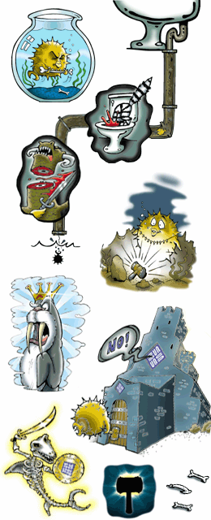 |
Written and arranged by Ty Semaka.
Co-arranged, recorded, mixed & mastered by Jonathan Lewis.
Vocals by DeVille, guitar by Sean Desmond, bass by Ian Knox,
drums by John McNiel, violin by Jonathan Lewis.
|
OpenBSD 3.2 CD2 track 2 is an uncompressed copy of this song. 3:00 (MP3 2.5MB) (OGG 2.3MB) 
|
Goldflipper With golden skin and flippers as sharp as a knife He's the machine Designed to dismember your life
And the fish
Cyborg on a mission (short instrumental intro)
You'll need some machismo to
But Flip's here for fun
She's all over Puff cause he's
Oh double seven
The women are fond
Goldflipper is gone |
|
Lyrics by Ty Semaka. Arranged by Ty Semaka & Jonathan Lewis.
Base & drum programming, recording, mixing & mastering by
Jonathan Lewis. Vocals by Onalea Gilbertson. Sax by Dan Meichel.
Trumpet & Trombone by Craig Soby.
|
OpenBSD 3.1 CD2 track 2 is an uncompressed copy of this song. 3:00 (MP3 2.9MB) (OGG 2.3MB) 
|
BSD fight buffer reign Flowing blood in circuit vein Quagmire, Hellfire, RAMhead Count Puffy rip attacker out
Crackin' ze bathroom, Crackin' ze vault
Can't fight the Systemagic
Sexty second, black cat struck |
Crackin' ze boardroom, Crackin' ze vault Chorus
Cybersluts vit undead guts
Crackin' ze bedroom, Crackin' ze vault
Chorus |
Produced & Directed by Ty Semaka and Ian Knox.
Written, Arranged and Performed by Ty Semaka (vocals, lyrics), Ian Knox (bass,
drum programming), and Sean Desmond (guitar).
Recorded & Mixed at Ruffmix Audio Productions (Calgary) by Kelly Mihalicz.
Mastered by Jonathan Lewis.
|
OpenBSD 3.0 CD2 track 2 is an uncompressed copy of this song. 3:00 (MP3 2.9MB) (OGG 2.3MB) 
|
Don't tell anyone I'm free Don't tell anyone I'm free
During these hostile and trying times and what-not
I'm secure by default
They that can give up liberty to obtain a little temporary safety
RELEASE TIME!!!!
Stay off, stay off, stay off... |
|
By The Plaid Tongued Devils. Produced & Arranged by Ty Semaka & Wynn Gogol. Written & Performed by Gordon Chipp Robb (bass line), John McNiel (drums), Ty Semaka (vocals & lyrics), and Wynn Gogol (programming). Recorded, Mixed & Mastered by Wynn Gogol of Workshop Recording Studios (Victoria BC). Check out http://www.thedevils.com
{kind=link}
{kind=link}
{kind=link}
{kind=link}
{kind=link}
{kind=link}
{kind=link}
{kind=link}
{kind=link}
{kind=link}
{kind=link}
{kind=link}
{kind=link}
{kind=link}
{kind=link}
{kind=link}
{kind=link}
{kind=link}